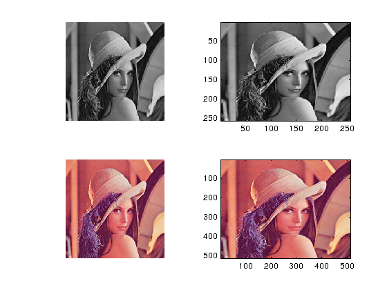
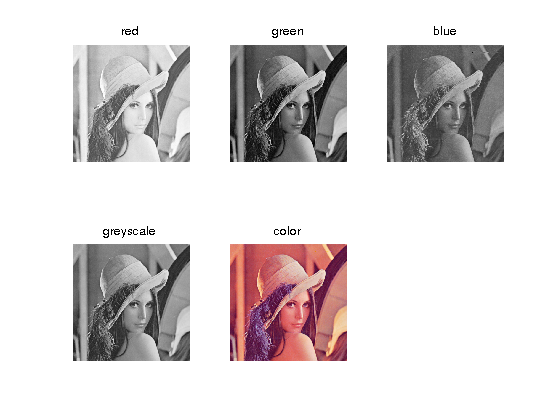
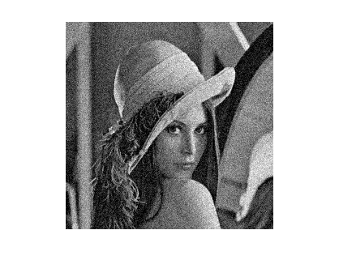

Loading and displaying images in Matlab
Contents
Load image
A = imread(FILENAME,FMT) reads a grayscale or color image from the file specified by the string FILENAME.
The text string FMT specifies the format of the file by its standard file extension. For example, specify 'gif' for Graphics Interchange Format files.
The return value A is an uint8 array containing the image data.
u_int8_gray = imread('lena1.bmp'); u_int8_color = imread('lena3.tif');
Display image
Use either imagesc or imshow to display images
imshow(I) displays a grayscale or truecolor image imagesc(I) is similar, but scales the pixel values to use the full colormap
We will use figure(H) to open a new plotting window, where H is an integer representing the id, or handle of the window.
We will show the result result of imshow and imagesc in separate subplots. H = subplot(m,n,p), breaks the Figure window into an m-by-n matrix of small axes, selects the p-th axes for the current plot, and returns the axes handle.
figure(1) subplot(2,2,1) imshow(u_int8_gray) subplot(2,2,2) imagesc(u_int8_gray) subplot(2,2,3) imshow(u_int8_color) subplot(2,2,4) imagesc(u_int8_color)
Color image
color images of size NxM are contained in matricies with size NxMx3 where the last dimension is the different channels (Red, Green and Blue)
figure(2) subplot(2,3,1) imshow(u_int8_color(:,:,1)) title('red') subplot(2,3,2) imshow(u_int8_color(:,:,2)) title('green') subplot(2,3,3) imshow(u_int8_color(:,:,3)) title('blue') subplot(2,3,4) imshow(rgb2gray(u_int8_color)) title('greyscale') subplot(2,3,5) imshow(u_int8_color) title('color')
Convert datatype to double
Convert image matrix to the double datatype. pixel values can now be represented as real numbers instead of integers
u = double(u_int8);
Add noise
We artificially add some noise to the image using normrnd
normrnd Random arrays from the normal distribution. R = normrnd(MU,SIGMA) returns an array of random numbers chosen from a normal distribution with mean MU and standard deviation SIGMA. The size of R is the common size of MU and SIGMA if both are arrays. If either parameter is a scalar, the size of R is the size of the other parameter.
R = normrnd(MU,SIGMA,M,N,...) or R = normrnd(MU,SIGMA,[M,N,...]) returns an M-by-N-by-... array.
See also normcdf, normfit, norminv, normlike, normpdf, normstat, random, randn.
We add normal noise with mean 0 and variance 20
u = u + normrnd (0, 20, size(u)); figure(3) imshow(uint8(u))